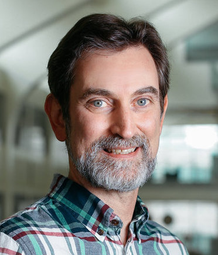

Dick Furnstahl

Who I am . . .
Where I am . . .
- Office: M2048 Physics Research Building (mezzanine, not 2nd
floor)
- Office phone: (614) 292-4830
- Fax: (614) 292-7557
- Department address: 191 W. Woodruff Ave., Columbus, OH 43210
- Email: furnstahl.1 at osu.edu
What I do . . .
- Group:
Nuclear Theory Group
- Research interests:
- effective field theories and the renormalization group for few- and many-body
nuclear systems
- nuclear many-body theory
- quantum chromodynamics and nuclear phenomena
- Bayesian statistical methods, computational methods and high-performance computing
- physics education, particularly for upper-level physics courses
- Current graduate students:
- Former graduate students:
- Eric Anderson, graduated with PhD 2012, Eric.R.Anderson at dynamics.cc
- Anirban Bhattacharyya, graduated with PhD 2005, anirban6 at gmail.com
- Alex Dyhdalo, graduated with PhD 2018, dyhdalo at gmail.com
- Eric Jurgenson, graduated with PhD 2009, jurgenson2 at llnl.gov
- Sushant More, graduate with PhD 2016, sushant.2811 at gmail.com
- Alex Perhac, graduated with MS 2016, perhac.1 at osu.edu
- Sunethra Ramanan, graduated with PhD 2007, suna at cts.iisc.ernet.in
- John Rusnak, graduated with PhD 1997, john.j.rusnak at att.net
- Negussie Tirfessa, graduated with PhD 2001, intirfessa at mcc.commnet.edu
- Kyle Wendt, graduated with PhD 2013, kylewendt at gmail.com
- Sarah Wesolowski, graduated with PhD 2017, sarahcwesolowski at gmail.com
- Trey White, graduated with MS 1996, whitejbiii at ornl.gov
- Courses in 2011-2019:
Analytic and Numeric Methods of Physics
[Au11,Au12,Au13],
Computational Physics (6810/780.20)
[Wi11,Wi12,Sp13,Sp14,Sp16,Sp17],
Physics H133 [Sp11,Sp12],
Nuclear Few- and Many-Body Physics[Au14],
Topics in Nuclear Physics[Au15,Au17],
Theoretical Mechanics (5300) [Sp18,Sp19]
- Department Committees:
Climate and Diversity Committee (chair)
More information . . .
Selected preprints and publications . . .
A (mostly) complete list is available
from INSPIRE.
Dick Furnstahl's Home Page.
furnstahl.1@osu.edu
{kind=link}